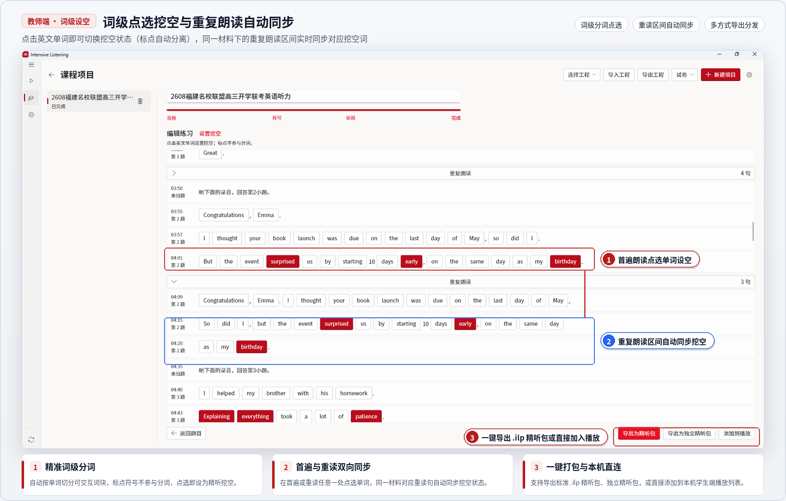
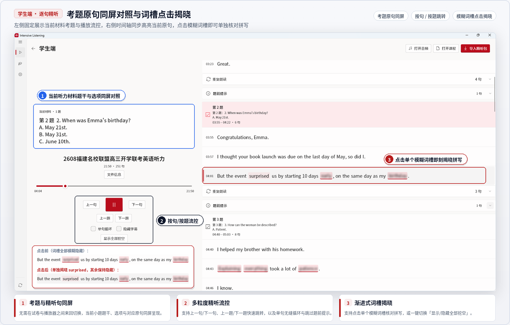

英语精听课程，制作与训练
把一段听力，
做成逐句
能听懂的课
从音频与参考文本出发，完成原句校对、分题编排与词级挖空，导出课程包交付练习。教师可人工细致打磨，也可交由本机智能体整理后审阅定稿。
00:28
What did Kate do on the first day?
- A.She visited the museum.
- B.She went to the library.
- C.She stayed at home.
词级挖空 called / shop
从原始音频到结构化精听课程
一份材料在同一条工作流里完成准备、编排与交付。
准备材料
导入 MP3、M4A 或 WAV 听力音频，附加试卷、答案或听力原文。已有时间轴的材料可直接导入 SRT 字幕。
校对与编排
修正逐句字幕与时间点，划分大题与小题，标记题前提示与重复朗读区间，点选单词设置词级挖空，保存为制作工程。
分发与精听
导出 .ilp 课程包交付学生。练习时按句跳转、单句循环、隐藏字幕盲听，在时间轴上逐词揭晓。
练习时看到的，和制作时编辑的，是同一份内容
教师在工作台审阅的原句、题目与挖空，学生在同一份时间轴上逐句练习。


教师人工制作
按「音频 → 转写 → 审阅 → 完成」逐步推进，逐句改字幕、分题、设挖空，确认无误后导出课程包。
智能体协同整理
选好音频与资料，应用生成提示词并开放本机 MCP 接口。智能体自动整理，最后由教师审阅定稿。
学生逐句精听
打开交付的课程包即可练习，支持翻页笔单键控制、按句重听、盲听辨音与挖空自测。
下载 Intensive Listening
桌面客户端集成了精听播放器与课程制作工作台，开箱即用，无需配置运行环境。
Windows 64 位 Windows 10 与 Windows 11。安装时可选择程序目录。
macOS Apple Silicon（M 系列），macOS 26.0 及以上。当前使用 ad-hoc 签名，首次打开可在系统设置的「隐私与安全性」中允许运行。
Web 播放器 纯浏览器端练习，直接解析 .ilp 课程包，无需安装。